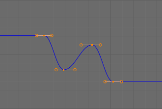
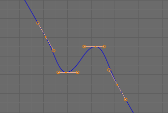
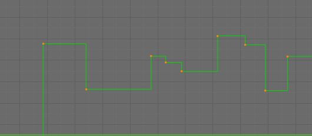
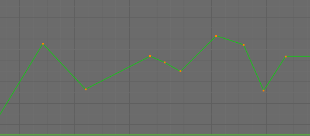
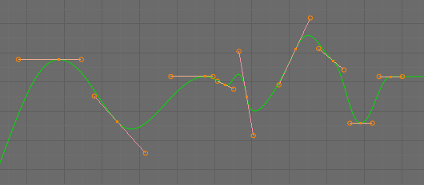
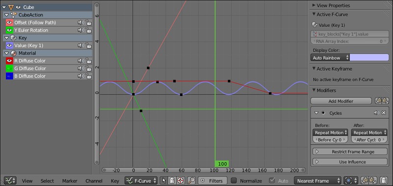
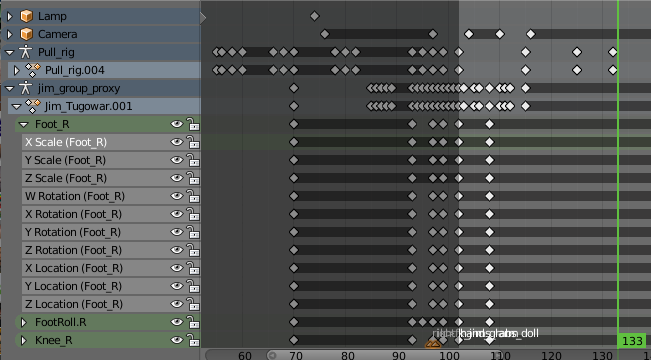
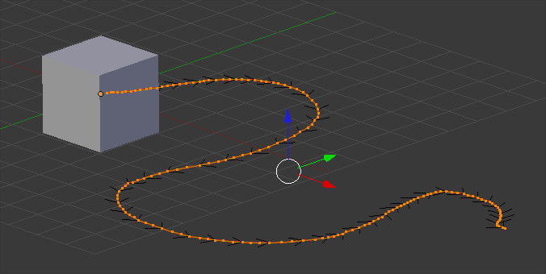

Introdução à animação no Blender
Introdução
Antes de começar a trabalhar animação é extremamente importante que conheça os fundamentos teóricos da área apresentados nos textos Introdução à animação 3D e Princípios e fundamentos da animação.
Alguns termos e conceitos importantes
Keyframes: são os pontos de início e finais de transições. São momentos com informação armazenada sobre posicionamento dos objetos.
Extrapolação (extrapolation): define comportamento da curva antes e após a primeira e última keyframe.
Constant significa que antes e depois da última keyframe o valor da keyframe é constante.

Imagem de Jaredr122 publicada na Blender Wiki.
Linear significa que curvas terminam em linhas direitas (linear).

Imagem de Jaredr122 publicada na Blender Wiki.
Interpolação (interpolation): define comportamento entre keyframes.
Constant significa que o valor da keyframe é constante até à nova keyframe.

Imagem de Jaredr122 publicada na Blender Wiki.
Linear é uma interpolação simples, linha direita entre duas keyframes.  Imagem de Jaredr122 publicada na Blender Wiki.
Bezier é a interpolação pré-definida, curvas suaves entre keyframes.  Imagem de Jaredr122 publicada na Blender Wiki.
Forward Kinematics (FK) / Inverse Kinematics (IK): ... Mais informação aqui.
Graph Editor: espaço de trabalho que permite manipular as keyframes, incluindo Extrapolação e Interpolação.
 Imagem de Koilz publicada na Blender Wiki.
Dopesheet: conceito herdado da animação tradicional. Atualmente, designa um espaço de trabalho sobretudo útil para manipular os tempos, o espaçamento entre keyframes.
 Imagem de Mikahl publicada na Blender Wiki.
Motion paths é uma ferramenta que permite visualizar uma animação identificando as respetivas frames. Depois de criadas keyframes, a aplicação calcula a animação e exibe uma representação estática da mesma.

Path animation é uma ferramenta de animação. O objeto segue um percurso, um caminho (path), previamente definido. A animação é controlada através da manipulação do path.

Utilização de referências
A utilização de imagens de referência é uma prática comum de enorme utilidade. Em animação são utilizadas imagens sem movimento e vídeos como referência para
 Retirado do DVD “Animation Fundamentals” (Beorn Leonard, 2011)
Retirado do DVD “Animation Fundamentals” (Beorn Leonard, 2011)
Trailer do DVD “Animation Fundamentals” (Beorn Leonard, 2011)
Material adicional recomendado
Pose to Pose Pop-Through Animation
The Seven Basic Emotions: Do you know them?
Life After Pose to Pose: Taking it to the Next Level
Applying the 12 Principles to 3D Computer Animation by Disney’s Isaac Kerlow